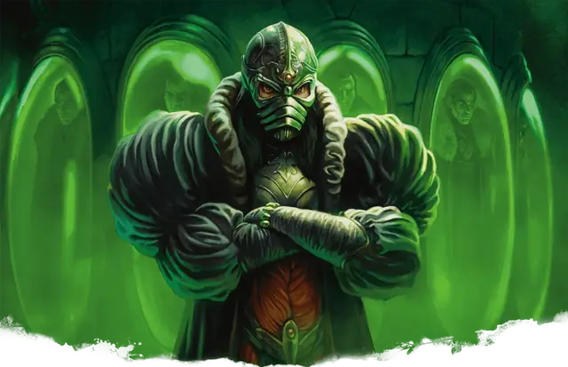

Маншун
Manshoon
Средний Гуманоид (Человек, Волшебник), Принципиальный Злой, именной НИП

Класс Защиты 15 Инициатива +7 (17)
Хиты 214 (33к8 + 66)
Скорость 30 футов
| мод | спас | ||
|---|---|---|---|
| СИЛ | 10 | +0 | +0 |
| ЛОВ | 14 | +2 | +2 |
| ТЕЛ | 14 | +2 | +2 |
| мод | спас | ||
|---|---|---|---|
| ИНТ | 23 | +6 | +11 |
| МДР | 15 | +2 | +7 |
| ХАР | 16 | +3 | +3 |
Иммунитеты Психический; Очарованный
Чувства Тёмное зрение 60 футов, пассивное Восприятие 12
Языки Общий, Драконий, Инфернальный, Подземный
Опасность 13 (10 000 опыта; БВ +5)
Особенности
Сопротивление магии. Маншун совершает с Преимуществом спасброски от заклинаний и прочих магических эффектов.
Действия
Мультиатака. Маншун совершает три атаки Волшебным всплеском. Он может заменить две атаки одним использованием Сотворения заклинаний.
Волшебный всплеск. Бросок рукопашной или дальнобойной атаки: +11, досягаемость 5 фт., или дистанция 120 фт. Попадание: 32 (4к12 + 6) Силового урона.
Сотворение заклинаний. Маншун сотворяет одно из следующих заклинаний (заклинательная характеристика — Интеллект, Сл спасброска заклинаний 19):
Неограниченно: Волшебная рука, Доспехи мага, КЗ, Молния, версия 4-го уровня, Обнаружение магии, Обнаружение мыслей, Свет, Фокусы
2/день каждое: Наблюдение, Послание, Силовая стена
1/день каждое: Клон, Перст смерти, Помутнение разума, Симулякр, Сокрытие разума
Бонусные действия
Туманный шаг. Маншун сотворяет Туманный шаг (заклинательная характеристика — та же, что для Сотворения заклинаний).
Реакции
Защитная магия. Маншун сотворяет Контрзаклинание или Щит в ответ на условие этого заклинания (заклинательная характеристика — та же, что для Сотворения заклинаний).
Бонус мастерства +5